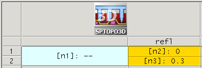

Sentaurus Topography 3D
3. Example: Material Etching
3.1 Overview
3.2 Generating the Initial Structure
3.3 Performing Material Etching
3.4 Saving the Final Structure
Objectives
- To perform an etching simulation using Sentaurus Topography 3D.
3.1 Overview
This section demonstrates an example of material etching. You are introduced to the Monte Carlo method that performs the flux integration as well as to the surface plots for visualizing the internal quantities during the simulation.
The complete project can be investigated from within Sentaurus Workbench in the directory Applications_Library/GettingStarted/sptopo3d/etch_rie2. If you are not familiar with Sentaurus Workbench projects, the preprocessed script file etch_rie2_t3d.cmd can be found in this directory.
To download the preprocessed script file, right-click the following link and choose Save Target As: etch_rie2_t3d.cmd.
To execute the file in Sentaurus Topography 3D on the command line, type:
> sptopo3d etch_rie2_t3d.cmd
After the command file is executed, the generated TDR file is etch_rie2_t3d.tdr.
3.2 Generating the Initial Structure
The fill command is used here to generate the initial structure.
First, the bulk structure is defined:
define_structure material=Silicon point_min= {0 0 0} point_max= {0.1 0.1 0.01}
To create an oxide and a photoresist layer, the fill command is used and the resulting structure is saved:
fill material=Oxide thickness=0.15 fill material=Photoresist thickness=0.02 save
The bulk silicon is filled first with 0.15 μm of oxide and then with 0.02 μm of photoresist. Figure 1 shows the resulting structure.
{kind=link}
Figure 1. Resulting structure after filling the bulk silicon with oxide and photoresist. (Click image for full-size view.)
Geometric etching is performed to remove part of the photoresist:
define_shape type=cube point_min= {0.05 0.05 0.16} point_max= {0.1 0.1 0.18} \
name=subtract
etch shape=subtract
Finally, the initial structure is saved:
save
Figure 2 shows the initial structure to be processed.
{kind=link}
Figure 2. Generated initial structure. (Click image for full-size view.)
3.3 Performing Material Etching
The next subsections demonstrate the use of the etching models in Sentaurus Topography 3D. This example illustrates the reactive ion etch 2 (RIE2) model.
Other etching models, such as dry etching, ion-enhanced etching, ion-milling, and simultaneous etching and deposition, can be specified similarly (see the Sentaurus™ Topography 3D User Guide).
3.3.1 Defining the Etching Machine
An etching machine that uses the RIE2 model is defined with the command:
define_etch_machine model=rie2 exponent=100
Similar to the deposition example, the exponent of the ion-angular distribution function, which is material independent, is set here with the parameter exponent.
Although, so far, the command sequence is similar to that used for deposition models, etching models allow you to define material-dependent parameters using the add_material command:
add_material material=Photoresist rate=0.0 anisotropy=0.0 sticking=1.0 \ reflection=@refl@ add_material material=Oxide rate=0.1 anisotropy=0.8 sticking=0.5 \ reflection=@refl@
The rates, the anisotropy, and the sticking coefficients assume different values for the photoresist and the oxide. Moreover, ions are reflected by both materials.
The reflection parameter, which is related to the reflection probability of ions, is equal to the Sentaurus Workbench parameter refl. The value of refl, in turn, is set in Sentaurus Workbench, as shown in Figure 3. It is used here to switch on ion reflection (when refl≠0) or to switch off ion reflection (when refl=0). This allows you to investigate the impact of ion reflection on the trench shape by comparing simulation results obtained with and without activating ion reflection.

Figure 3. Sentaurus Workbench setup of the project, showing different nodes relative to different values of the refl parameter.
For details about the physics of the RIE2 model and other etching models, see the Sentaurus™ Topography 3D User Guide.
3.3.2 Starting the Etching Process
In this example, flux integration is performed using the Monte Carlo method, which allows the use of multiple CPU cores to accelerate simulations on shared-memory computers. Multithreaded computation is activated with the command:
let parallel=true let num_threads=8
To start the etching process with the Monte Carlo method, and to set the level-set grid spacing, the etching time, and the surface plotting interval, use the command:
etch spacing={0.0015 0.0015 0.0015} time=0.3 plot_interval=0.1 \
engine=monte_carlo integration_samples=100
In this example, the grid spacing is set to 1.5 nm in all three directions. The etching is simulated for 0.3 minutes, and a surface plot is saved and appended to the output TDR file every 0.1 minutes.
The number of neutral and ion particles used in the Monte Carlo method is set with the parameter integration_samples (here, 100). By increasing this value, the simulation accuracy increases but at a higher computational cost.
Surface plots allow you to monitor the evolution of the surface during the simulation. In addition, you can plot the value of the internal quantities on the surface, such as velocity and visibility, as well as the direct, reflected, and reflection fluxes.
The level-set grid must be set fine enough to capture correctly the relevant physical effects (for example, ion reflection) during the simulation, while having a reasonable simulation time.
3.4 Saving the Final Structure
The simulation result is saved to a TDR file:
save
Figure 4 shows the processed structures, with and without considering ion reflection.
{kind=link}
Figure 4. Resulting structures after etching with RIE2 model: (left) without activating and (right) with activating ion reflection computation. (Click image for full-size view.)
To better investigate the effect of ion reflection on the final trench shape, surface plots are saved at different times. Figure 5 shows that ion reflection clearly contributes to microtrenching at the bottom of the sidewalls. Microtrenches are known to have adverse effects during process steps of transistor fabrication. High stresses tend to develop at the vertices of these microtrenches, increasing the probability of device damage.
{kind=link}
Figure 5. Surface plots showing surface evolution during RIE2 model etching. The plots are saved at different etching times (first available times after the specified interval). The values assumed by the ion reflection flux on the surface are plotted. (Click image for full-size view.)
Copyright © 2022 Synopsys, Inc. All rights reserved.